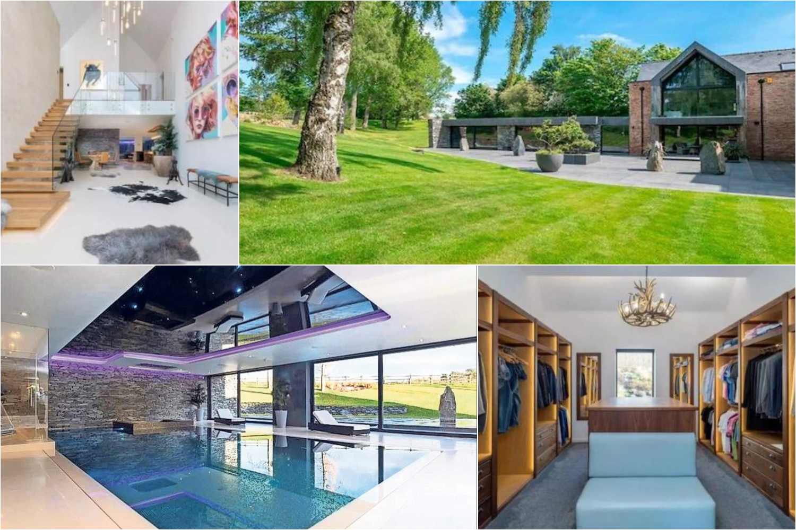
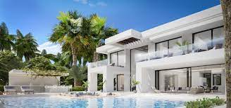

As you know Cristiano Ronaldo dos Santos Aveiro GOIH ComM is a Portuguese professional footballer who plays as a forward for and captains both Saudi Pro League club Al Nassr and the Portugal national team.And become a gretest footballer of all time.
Cristiano Ronaldo collection is worth over $25 million. Ronaldo's garage boasts a massive lineup of high-end vehicles, such as Audi, Maserati GranCabrio, Bentley Continental GT, Porsche 911 Turbo S, McLaren, Ferraris, Bugatti Centodieci, Rolls Royce Ghost, Aston Martin, Lamborghini, Ferrari, and more.
<=Ronaldo most favourite cars.
Cristiano Ronaldo has a total of 8 properties, most of which are in Europe, and one is in New York.
The La Finca Manor - Cristiano’s House in Madrid Cristiano Ronaldo House in Marbella, Spain – A Luxurious Palace Cristiano Ronaldo House: The Madeira Mansion Cristiano Ronaldo House: The Lisbon Penthouse Cristiano Ronaldo House: The Torino Castle